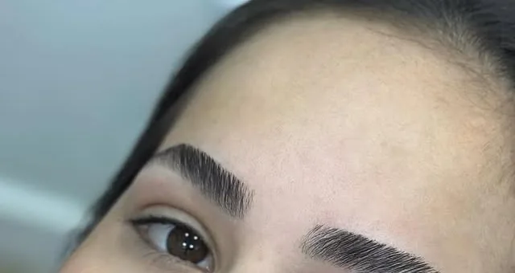

Design
Desenho e limpeza no formato do rosto, com resultado natural.
Brow bar no anexo do Bistek · Criciúma
Mais de 10 anos dedicados a sobrancelhas naturais, desenhadas para o seu rosto. Design, henna, brow lamination, micro e lash.


Toque no rosto ou escolha na lista. A mensagem vai pronta para o WhatsApp da Fábrica, e a equipe confirma o horário com você.
Toque nos pontos do rosto para ver o que a Fábrica faz em cada lugar.
 Sua mensagem para a Fábrica
Enviar pelo WhatsApp
Sua mensagem para a Fábrica
Enviar pelo WhatsApp
Toque em “Adicionar” para levar o serviço para a sua mensagem de agendamento.
Desenho e limpeza no formato do rosto, com resultado natural.
Cor para preencher falhas e marcar o contorno por alguns dias.
Fios alinhados e com volume, com efeito penteado.

Micropigmentação fio a fio ou esfumada. Começa com uma avaliação.

Cílios desenhados para valorizar o olhar.
Buço e rosto, com cera ou linha.
Extração de cravos e cuidado com a pele do rosto.
São mais de 10 anos trabalhando com sobrancelhas, sempre buscando o resultado natural, que valoriza o seu rosto sem exagero. Desde 2016 no anexo do Bistek, em Criciúma.
Av. Centenário, 3420
Criciúma/SC · CEP 88803-100
Faça a sobrancelha e aproveite para resolver as compras no mesmo lugar.
Horário de atendimento: a confirmar com vocês.
A henna colore os fios e a pele por alguns dias. O microblading desenha fio a fio, e o shadow faz um efeito esfumado, os dois com micropigmentação. Na avaliação, a designer indica o melhor para você.
É uma técnica que alinha os fios e dá volume, deixando a sobrancelha com efeito penteado.
Monte seu horário aqui no site ou chame no WhatsApp (48) 99822-2134. A equipe confirma o horário com você.
No anexo do Bistek da Av. Centenário, 3420, em Criciúma.